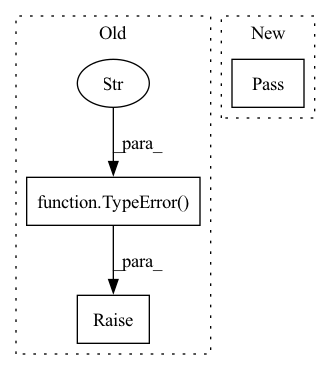

Pattern ID :3913
Before Change
outfile.close()
print ("Pipeline exported successfully.")
except:
raise TypeError("Error! Pipeline could not be exported." )
class Compare_Image_Classifiers():
After Change
log ("Pipeline exported successfully.")
except:
log ("Error! Pipeline could not be exported.")
pass
class Compare_Image_Classifiers():
In pattern: SUPERPATTERN
Frequency: 3
Non-data size: 3
Instances Fragment ID: 14780247
Project Name: radtorch/radtorch
Commit Name: 8dfc4d65bccf90420625443151f298062bd69fbc
Time: 2020-04-13
Author: elbanan@users.noreply.github.com
File Name: radtorch/pipeline.py
M Class Name: Image_Classification
N Class Name: Image_Classification
M Method Name: export(2)
N Method Name: export(2)
M Parent Class:
N Parent Class:
M File Name: radtorch/pipeline.py
N File Name: radtorch/pipeline.py
M Start Line: 66
M End Line: 67
N Start Line: 66
N End Line: 68
Before Change
)
elif tuple_params == ((),):
if value != ():
raise TypeError(f"{name} is not an empty tuple but one was expected" )
else:
if len(value) != len(tuple_params):
raise TypeError(
f"{name} has wrong number of elements "After Change
elif not getattr(annotation, "__args__", None):
// Unparametrized Tuple or plain tuple.
pass
else:
// Python 3.6+
use_ellipsis = annotation.__args__[-1] is Ellipsis Fragment ID: 14780246
Project Name: brendanxwhitaker/asta
Commit Name: d09cf7dcadee12c61fa426e2e0d47f5e3fd2a3fa
Time: 2020-03-19
Author: 35980963+langfield@users.noreply.github.com
File Name: asta/origins.py
M Class Name: AnonimousClass
N Class Name: AnonimousClass
M Method Name: check_tuple(4)
N Method Name: check_tuple(4)
M Parent Class:
N Parent Class:
M File Name: asta/origins.py
N File Name: asta/origins.py
M Start Line: 62
M End Line: 117
N Start Line: 64
N End Line: 106
Before Change
export(self.best_classifier, export)
log(" Best Classifier Pipeline Exported Successfully")
except:
raise TypeError("Error! ROC and AUC for classifiers have not been estimated. Please run Compare_Image_Classifier.roc.() first" )
class Feature_Extraction():
After Change
log(" Best Classifier Pipeline Exported Successfully")
except:
log("Error! ROC and AUC for classifiers have not been estimated. Please run Compare_Image_Classifier.roc.() first")
pass
class Feature_Extraction():
Fragment ID: 14780249
Project Name: radtorch/radtorch
Commit Name: 8b8699ae421681ad3b732ef95d681f77b1955192
Time: 2020-04-13
Author: elbanan@users.noreply.github.com
File Name: radtorch/pipeline.py
M Class Name: Compare_Image_Classifiers
N Class Name: Compare_Image_Classifiers
M Method Name: best(2)
N Method Name: best(2)
M Parent Class:
N Parent Class:
M File Name: radtorch/pipeline.py
N File Name: radtorch/pipeline.py
M Start Line: 145
M End Line: 151
N Start Line: 145
N End Line: 152